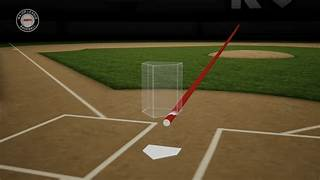

The Strike Zone
The Official Definition of the Strike Zone
The **strike zone** is one of the most debated aspects of baseball. According to the **Major League Baseball (MLB) rulebook**, the strike zone is defined as the area over home plate between the batter’s knees and the midpoint of their torso. However, the actual interpretation of the zone varies from umpire to umpire and batter to batter. This flexibility in judgment is what makes human umpiring both unique and controversial.
One of the biggest challenges for umpires is adjusting their calls based on the **batter's stance**. Since every batter has a different posture and height, the strike zone is not static. A tall player, like Aaron Judge, naturally has a larger strike zone than a shorter player, but umpires must also account for crouching stances that shrink the zone. This means that the same pitch in one game could be a strike, while in another, it might be called a ball depending on the batter's setup.
The Evolution of the Strike Zone
The strike zone has changed multiple times throughout baseball history. In the early **1960s**, it was significantly larger, favoring pitchers and leading to low-scoring games. To balance offense and defense, MLB reduced the strike zone in **1969**, making it smaller to encourage more hitting. Since then, the zone has been refined several times, with modern technology influencing how umpires are trained to call it.
Challenges in Calling Strikes
One of the toughest aspects of umpiring is handling **borderline pitches**—balls that cross the plate near the edges of the zone. Umpires must decide in real time whether a pitch clipped the edge of the strike zone or missed it entirely. Many of these calls are within **fractions of an inch**, making them incredibly difficult to judge. This is where **pitch framing** comes into play—catchers use subtle movements to make pitches appear more like strikes, influencing umpire decisions.
The Role of Technology
With the introduction of **Automated Ball-Strike (ABS) technology**, some leagues are experimenting with computer-generated strike zones. While ABS reduces human error, it also removes the human element that has been part of baseball for over a century. Some argue that **robot umpires** would create a perfectly consistent zone, while others worry that baseball would lose an important part of its history.
As of now, umpires remain the **final authority** on every pitch. They rely on years of experience, training, and instincts to call balls and strikes. The debate over technology in umpiring will continue, but for many, the human element of baseball is what makes it so exciting.